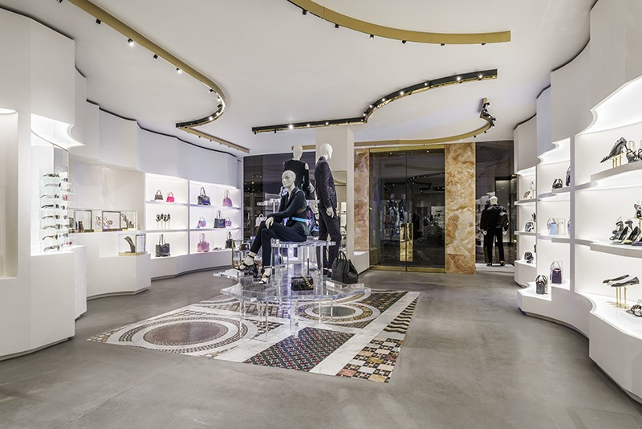
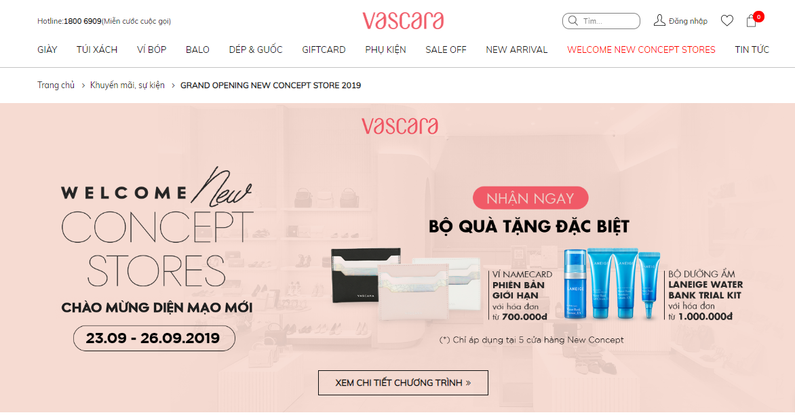
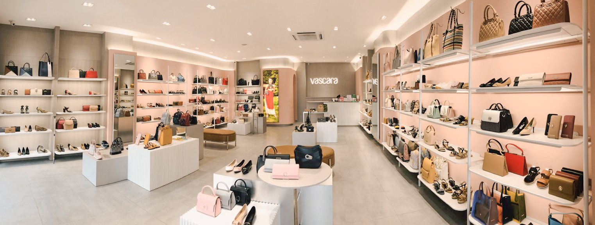
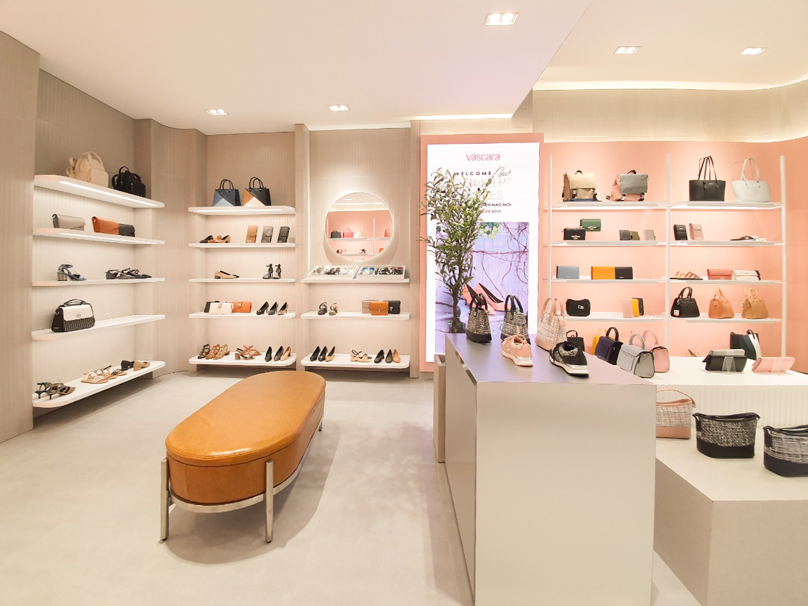

Ngành bán lẻ nhất là ngành hàng chuyên về thời trang là một ngành đặc biệt khi các nhãn hàng phải liên tục thay đổi để không chỉ tạo ra sự khác biệt về đặc tính sản phẩm mà còn phải những đặc điểm nhận dạng riêng ở từng các yếu tố nhằm khẳng định được ADN (đặc điểm không thể lẫn đi đâu) của nhãn hàng.
Ngành thời trang có ảnh hưởng rất lớn đến cuộc sống thời hiện đại và gần như quyết định phong cách sống, cái đẹp của con người ngày nay. Mua sắm quần áo, đồ thời trang trở thành việc không thể thiếu của bất cứ ai, nhằm thay đổi hình ảnh bản thân và xây dựng hình ảnh cá nhân. Vì nó có ảnh hưởng lớn đến vậy, khách hàng chỉ tin vào nhưng thương hiệu với sản phẩm chất lượng, đẹp, sang trọng. Để khách hàng luôn tin tưởng và đến với mình cũng như khẳng định một hình ảnh đầy thời trang, đẳng cấp, các doanh nghiệp trong ngành luôn cố gắng đầu tư, xây dựng lớp áo thương hiệu thật ấn tượng. Xu thế đó là càng nổi bật, càng sang trọng càng tốt.

Không gian bên trong của một thương hiệu thời trang lớn
Xu Hướng O2O - Cơ Hội Bứt Phá
Trong thời đại 4.0, giữa xu hướng thương mại điện tử lên ngôi thì ngành hàng thời trang còn cần phải tạo ra những trải nghiệm mua sắm đặc biệt, truyền tải thông điệp có giá trị hấp dẫn đến khách hàng mục tiêu để tiếp cận và từ đó tác động vào hành vi mua sắm của khách hàng để tăng trưởng doanh thu - một trong những tính chất của O2O (Online to Offline) thời hiện đại.

Cổng thông tin điện tử cũng cần được chăm chút về hình ảnh
Hệ thống nhận diện thương hiệu khác biệt
Nếu như trước đây, khách hàng chỉ quan tâm đến chất lượng sản phẩm thì nay tính thẩm mỹ cũng được đề cao, không chỉ dừng lại ở đó mà hình ảnh nhận diện của một thương hiệu cũng được chú trọng. Các nhãn hàng giờ đây cần thể hiện được tính đặc biệt trong trải nghiệm mua sắm của khách hàng cao cấp. Không gian trải nghiệm phải đồng điệu được khách hàng và sản phẩm, tạo nên sự thoải mái và riêng tư. Thiết kế đề cao tính thẩm mỹ hơn là việc trưng bày sao cho càng nhiều hàng hóa càng tốt.
Tối ưu hóa hình ảnh thương hiệu theo tính chất ngành hàng
Đối với ngành hàng thời trang, việc tối ưu hóa cả thiết kế quầy kệ là một ưu điểm cần khai thác tối đa. Đồng thời, việc sử dụng những đường cong mềm mại chính là xu hướng của các nhãn hàng cao cấp, không gian cửa hàng với nhiều đường cong tạo nên không gian trải nghiệm liền lạc và vô tình khách hàng trở thành người đi trong vòng lặp vô tận để trải nghiệm sản phẩm.

Chưa dừng lại ở sản phẩm và không gian mềm mại, xu hướng hiện tại là mang những mảng xanh của thiên nhiên vào trong cửa hàng, tạo nên hướng nội thất thân thiện và thu hút hơn. Đặc điểm này cũng ít bao giờ xuất hiện trong các cửa hàng bán lẻ ở các thương hiệu không nhiều tên tuổi.
Bên cạnh những yếu tố trên, tùy theo mức độ và quy mô của doanh nghiệp, các nhãn hàng sẽ phát triển thêm hình ảnh nhận diện của thương hiệu mình thông qua những cách phù hợp khác.

Nguồn hình ảnh: Tổng hợp